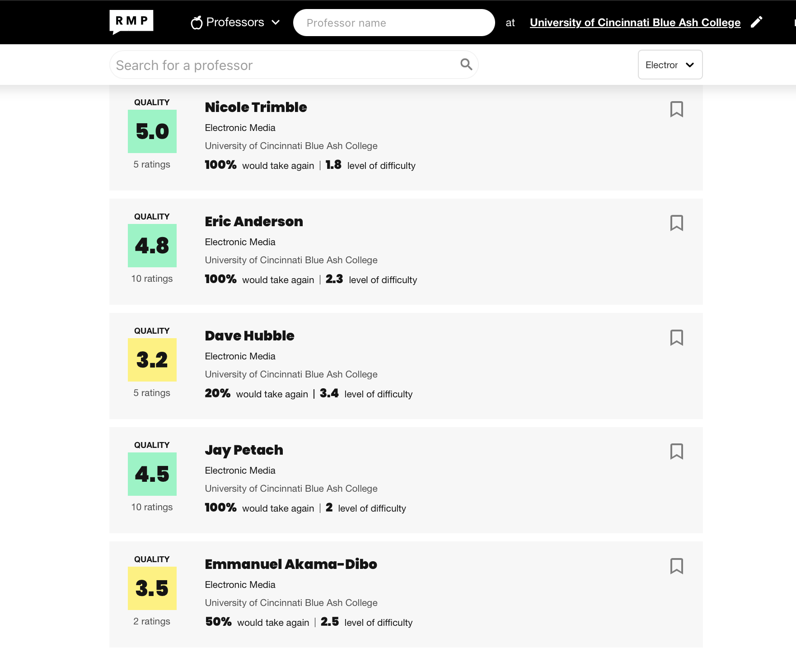

Highly rated
When viewing a professors profile there are thre numbers that matter.The first is their overall star rating which is out of five,anything above a four is really good and it means that students enjoyed having this professor as a teacher and enjoyed the classroom enviroment the profeesor provided.
The second numebr to look out for is their difficulty rating this is also out of five. a lower difficulty score means the class was easy or that the workload was manageable,A high difficulty score means that the workload wasn't manageable and a difficulty rating of four or five means that a high workload is expected of this class.
The third number is the take agian number.This is in my opninnion one of the most important numbers,becuase life happens and eventhough the workload is manageable,the professor has a high overall star rating,you may have not been able to pass the class but the professor being understanding and wanting to work with you,when time comes for you to retake the class you will want to take the same professor again due to the kidness and them understanding that life happens.

When you are looking at these reviews make sure you look at when the review was written,a professor may have had a bad rating three years ago but may have recieved constructive criticism about the class,the same goes for a professor who may have had a good rating five years ago may have completly changed their teaching style.
Don't go solely based off of what you see on rate my professors think of rate my professors as a tool another good way to get some insight is to ask around,in your classroom to see who took the professor and what they thought of him and wether or not they think the ratings left on rate my professor is accurate.and sometimes a professor ay have a bad review you take the class and it can be a totally opposite expereince for you.